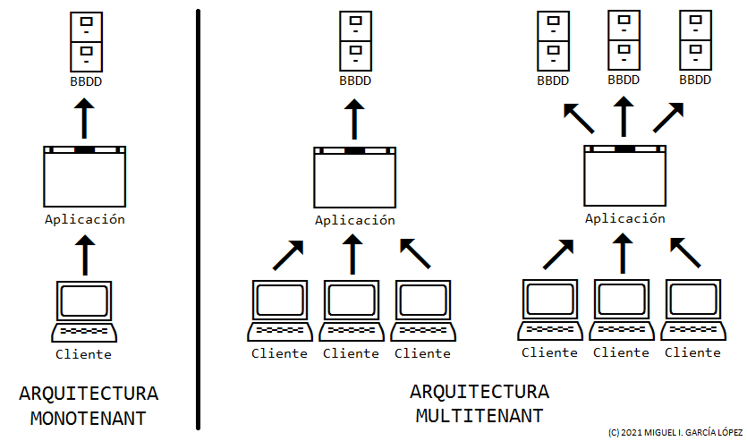

Arquitectura multitenant (I)
August 5, 2021 | ES
 Miguel García
Miguel García
Una introducción. Definición, ventajas e inconvenientes.
Introducción
La evolución en el desarrollo de software ha venido marcada por varios factores, entre ellos:
- Infraestructura (velocidad de proceso, capacidad de almacenamiento, ordenadores personales, dispositivos móviles, servidores).
- Sistemas operativos (multiusuario, multitarea, usuario final, servidores).
- Lenguajes de programación (objetos, multihilo, multiplataforma).
- Conectividad (Internet).
Todos estos factores, han propiciado nuevos enfoques en la arquitectura de software, uno de ellos es el denominado multitenant.
En las siguientes líneas, voy a tratar de definirlo y compararlo con el enfoque tradicional.
Vayan por delante mis disculpas, por las informaciones erróneas o inexactas que pudieran aparecer en el texto.
La arquitectura monotenant
Este tipo de arquitectura de software, la más utilizada hasta fechas relativamente recientes, consiste en que cada instancia de la aplicación es utilizada por un único cliente a la vez.
En cuanto al almacenamiento de los datos de la aplicación, la opción más sencilla y utilizada, suele ser la de una única base de datos por cliente.
Suele ser la elección natural si la instalación se realiza en casa del cliente (on-premise) o en ordenadores personales.
La arquitectura multitenant
La característica principal que define la arquitectura multitenant, consiste en que una sola instancia de la aplicación (código en ejecución), es utilizada por varios clientes a la vez (tenants).
En cuanto al almacenamiento y gestión de los datos de la aplicación, existen varios enfoques:
- Una base de datos por cada tenant.
- Una base de datos por cada tenant y otra compartida por todos ellos.
- Una base de datos compartida por todos los tenants.
La elección de un enfoque u otro, dependerá de la aplicación en sí y de la infraestructura en la que se aloje, puesto que cada uno de ellos tiene sus ventajas e inconvenientes, como se verá en futuras entregas.
Qué no es multitenant
Determinadas aplicaciones desarrolladas según la arquitectura monotenant tradicional, permiten la gestión de más de un cliente, pero nunca a la vez.
Son las típicas aplicaciones multiempresa, que permiten seleccionar aquella en la que queremos trabajar (software de contabilidad, facturación, etc.).
En cuanto al almacenamiento y gestión de los datos, es aplicable lo indicado para la arquitectura multitenant.
Monotenant vs Multitenant
En la imagen siguiente, podemos ver las principales diferencias entre la arquitectura monotenant y la multitenant.

Ventajas e inconvenientes de las aplicaciones monotenant
Entre las ventajas de las aplicaciones monotenant, podemos encontrar:
- Mayor sencillez a la hora de plantearlas y desarrollarlas.
- Gestión de los datos más simple, de no ser que se adopte el enfoque multiempresa.
- Un fallo en la infraestructura on-premise afectará a un solo cliente.
- Un fallo en la aplicación afectará a varios clientes, dependiendo de las versiones instaladas en cada una de sus instalaciones.
- Un fallo en la integridad de los datos afectará a un solo cliente (on-premise).
- Un fallo de seguridad afectará a un cliente cada vez.
Esta arquitectura también tiene inconvenientes, como pueden ser:
- Mayor laboriosidad en su despliegue y actualización, puesto que cada cliente ejecuta una instancia diferente de la aplicación (se ha de hacer múltiples veces, tantas como clientes la utilicen).
- Lo anterior también cabe aplicarlo a la gestión de copias de seguridad de los datos, pues se ha de hacer de forma independiente, para cada cliente.
- Consumo de mayores recursos en el caso de que estas aplicaciones sean desplegadas en servidores del proveedor de software (virtualización, varias copias de la aplicación, etc.).
Ventajas e inconvenientes de las aplicaciones multitenant
Algunas de las ventajas de esta arquitectura son:
- Despliegue y actualización más simples y rápidos, puesto que solo existe una aplicación a mantener.
- Menor complejidad en la gestión de copias de seguridad de los datos.
- Utilización de menores recursos, debido a la compartición del código de la aplicación.
- Es la elección natural en aplicaciones desplegadas en servidores en la nube.
Entre las desventajas, cabe citar:
- Es imperativo que un cliente no pueda acceder a los datos de otro.
- La personalización de la aplicación para un cliente en concreto (funcionalidades específicas, integraciones con terceros), puede ser más compleja.
- Un fallo en la aplicación o la infraestructura afectará a múltiples clientes (en el peor de los casos, a todos).
- Un fallo en la integridad de los datos, afectará a varios clientes (o incluso a todos), dependiendo del enfoque de datos utilizado.
- Un fallo de seguridad afectará a todos los clientes.
- Requiere de una monitorización constante y planes de emergencia listos para entrar en acción ante cualquier contingencia.
Observaciones
A mi entender, en este tipo de cuestiones, no hay verdades absolutas, ganadores o perdedores, buenos o malos.
Se podría argumentar que algunas de las ventajas enumeradas, tanto de una u otra arquitectura, si se analizan más a fondo o se tienen en cuenta otras consideraciones, puede que no sean tan absolutas. Lo mismo ocurre con los inconvenientes.
Por citar un ejemplo del enfoque multitenant: "despliegue y actualización más simples y rápidos, puesto que solo existe una aplicación a mantener".
Esto es cierto al 100%, si solamente tenemos en cuenta el hecho en sí, obviando otras consideraciones, de no poca importancia:
- ¿Será necesario detener el servicio durante una actualización, afectando la actividad de todos los clientes?
- ¿La nueva versión de la aplicación precisará de una alteración de la base de datos? ¿Correrá peligro la integridad de la misma?
- ¿Disponemos de los planes de contingencia necesarios en el caso de una actualización fallida o problemática?
Evidentemente, existen respuestas a cada uno de estos desafíos, pero todas ellas precisan de planificación y recursos, no siempre disponibles.
Por otra parte, ¿tiene sentido desarrollar una aplicación multitenant a medida, para un único cliente? Obviamente, la respuesta es no.
Además, se observará que las ventajas e inconvenientes citados, lo son desde el punto de vista de la empresa proveedora del software.
Más adelante, trataremos de ver todo este asunto, desde la perspectiva del cliente.
Consideraciones finales
La elección de una arquitectura, en ocasiones depende de factores ajenos a la idoneidad de una u otra en un determinado contexto:
- Infraestructura disponible.
- Número de clientes interesados en la aplicación.
- Recursos económicos.
- Etc.
En ocasiones, un enfoque acertado es tomar el camino de enmedio.
Por ejemplo, vamos a desarrollar una aplicación que idealmente utilizarán muchos clientes simultáneamente, pero de momento no hay recursos, ni clientes.
Una posibilidad sería realizar inicialmente una aplicación monotenant, e ir instalándola en servidores virtuales, uno por cada cliente. O en un mismo servidor, proporcionando para cada cliente un subdominio, el código de la aplicación y la base de datos.
En el momento en que la situación lo permitiese, se refactorizarían determinadas partes de la aplicación, con el fin de adoptar un modelo multitenant.
Para realizar la transición de forma no demasiado traumática, podríamos tener en consideración lo siguiente:
- Estructura interna de la aplicación, basada en configuración.
- Una base de datos por cada tenant.
En próximas entregas, trataré de profundizar en los elementos más importantes que conforman la arquitectura multitenant.